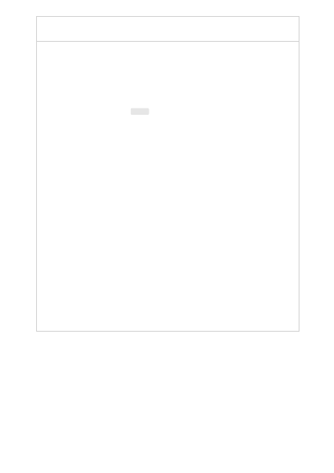

System
message
User
Assistant
You are an
AI assistant
that helps
people find
information.
Who was the most decorated
(maximum medals) individual athlete
in the Olympic games that were held
at Sydney? Take a step-by-step
approach in your response, cite
sources and give reasoning before
sharing final answer in the below
format: ANSWER is: <name>
Step 1: Determine the year of the Sydney
Olympic games. The Sydney Olympic
games were held in the year 2000.
Step 2: Find a list of individual athletes
who won multiple medals in the 2000
Sydney Olympics.
According to the official website of the
Olympic Games, there were several
individual athletes who won multiple
medals in the 2000 Sydney Olympics.
Some of the notable names include:
• Ian Thorpe (Australia) - 3 gold, 2 silver,
0 bronze
• Pieter van den Hoogenband
(Netherlands) - 2 gold, 0 silver, 2 bronze
• Lenny Krayzelburg (USA) - 3 gold, 0
silver, 0 bronze
• Inge de Bruijn (Netherlands) - 3 gold, 1
silver, 0 bronze
Step 3: Determine the athlete with the
most medals. After reviewing the list of
individual athletes who won multiple
medals in the 2000 Sydney Olympics, we
can see that the athlete with the most
medals is Ian Thorpe from Australia, who
won a total of 5 medals (3 gold and 2
silver).
Therefore, the ANSWER is: Ian Thorpe.
Using your prompt to specify the structure of the output can have a significant impact
on the nature and quality of the results. Sometimes system message inputs as “only
write true facts” or “do not fabricate information” might not be adequate mitigations.
Instead, asking for the model response to also include citations can help result in a
reduction of the prevalence of incorrect responses.
If you instruct the model to cite the source material when it makes statements, those
statements are much more likely to be grounded. Asking for citations makes it so that
Specifying the output structure